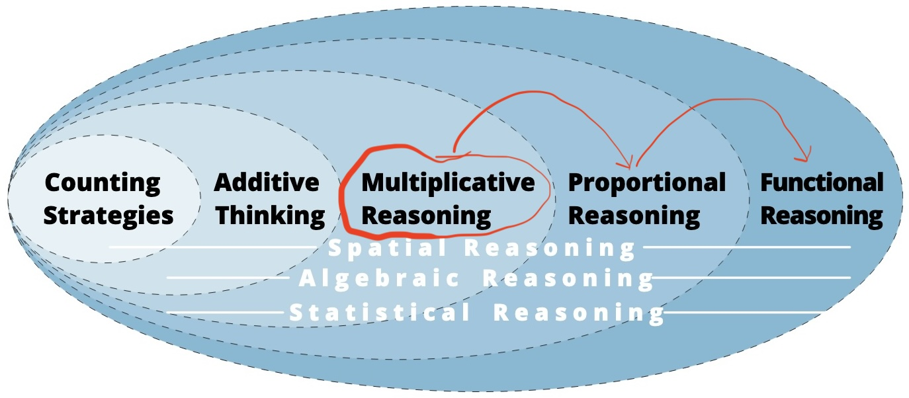

The Linchpin
Your district has a good curriculum and you do everything you can to help your students succeed.
In spite of these best efforts, students are still struggling.
So much so, that 3 out of 4 U.S. 8th graders are not proficient in math.

Why does this happen?
